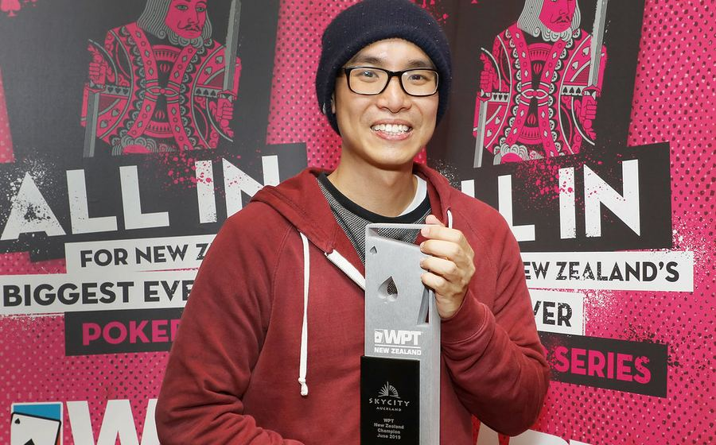

Foto: World Poker Tour (CC BY-ND 2.0)
Turnamen Poker Kompetitif Nasional 2026 resmi menuntaskan babak final table dengan hasil yang mengejutkan banyak pengamat. Format kompetisi ini murni mengadu keterampilan membaca situasi, manajemen risiko, dan psikologi lawan — sejalan dengan status poker kompetitif sebagai olahraga pikiran (mind sport) yang diakui di berbagai ajang internasional.
Babak final table diikuti oleh delapan peserta yang lolos dari total lebih dari 300 peserta di babak penyisihan. Tekanan chip stack yang semakin menipis membuat setiap keputusan di beberapa putaran terakhir menjadi krusial. Peserta dengan manajemen chip paling disiplin akhirnya berhasil bertahan hingga head-to-head terakhir.
| Aspek | Catatan |
|---|---|
| Jumlah peserta final table | 8 pemain |
| Durasi babak final | ±9 jam permainan |
| Momen kunci | All-in decisive di putaran ke-42 |
Juara turnamen dikenal luas di komunitas kompetisi karena gaya bermain yang sabar dan minim kesalahan fatal — pendekatan yang juga banyak dibahas dalam artikel kami soal dasar strategi poker kompetitif. Konsistensi semacam ini mengingatkan pada pola disiplin yang juga terlihat di cabang olahraga presisi seperti biliar, di mana akurasi jangka panjang lebih menentukan ketimbang keberuntungan sesaat.
Perkembangan format turnamen semacam ini juga tidak lepas dari sejarah panjang kompetisi poker itu sendiri, yang bisa dibaca lebih lanjut di ulasan kami tentang sejarah turnamen poker dunia. Untuk pembaca yang tertarik mengikuti liputan cabang kompetisi strategi lain, kami juga rutin mengulas dinamika taktik di Liga 1 sepak bola dan performa atlet di ring pada rubrik berita tinju.
Nusantaratoto akan terus memantau perkembangan kalender turnamen poker kompetitif nasional dan internasional pada edisi-edisi mendatang. Ikuti juga kategori Poker kami untuk liputan lengkap turnamen berikutnya.